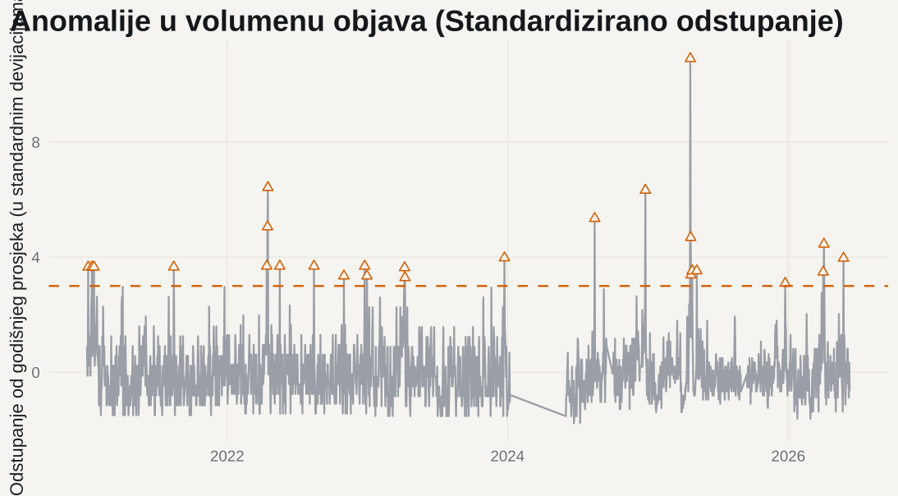
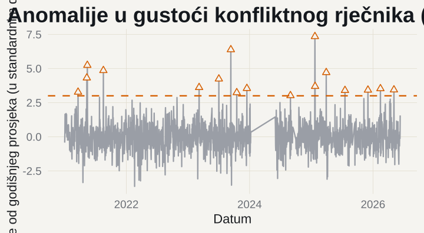
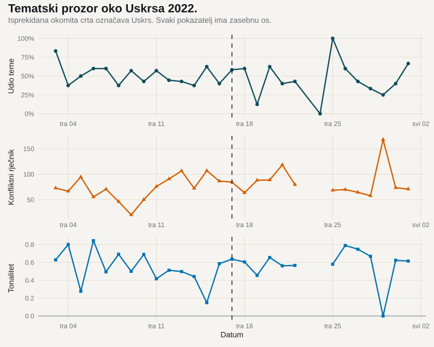
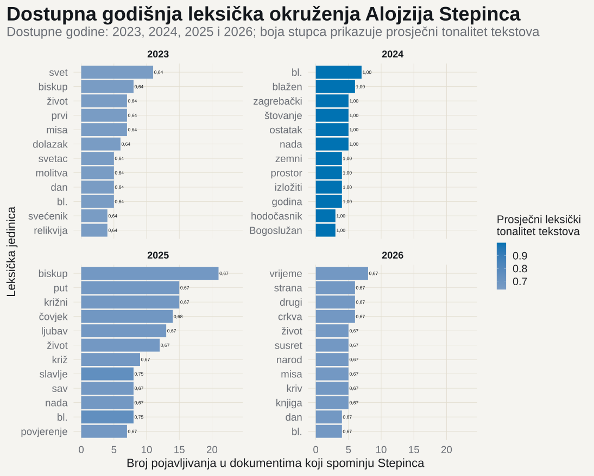

Fokus na događaje (2021.–2026.)
Dnevna odstupanja volumena, konfliktnog rječnika i tonaliteta u uzorku
Događaji
Dinamika
Tonalitet
Fokus na događaje označava neuobičajene dane te opisuje prozor oko Uskrsa 2022. i dostupna leksička okruženja Alojzija Stepinca.
Uvod u dinamičku analizu
Ažurirano24. kolovoza 2026. Podaci zaključno s11. lipnja 2026. StatusPreliminarno
Sažetak u 60 sekundi
Mapa prelazi s dugoročnih obrazaca na neuobičajene dane i dva ograničena slučaja.
- Z-vrijednosti označavaju dane neuobičajenog volumena ili konfliktnog rječnika.
- Prozor oko Uskrsa 2022. pokazuje dnevno kretanje teme Duhovnost i liturgija.
- Presjeci o Stepincu prikazuju dostupne leksičke jedinice, a ne cjelovitu vremensku seriju.
Može se zaključiti koji dani i leksički presjeci odstupaju unutar uzorka. Ne može se automatski odrediti uzrok odstupanja, namjera autora ili događaj koji ga je proizveo. Ograničenja dnevnih vrijednosti opisana su u Metodologiji.
Kada pažnja naraste i što je pokrene? Nakon što su prethodne faze mapirale aktere i platforme, tematske kategorije te emocionalnu i konfliktnu atmosferu, dnevne promjene promatra zadnja analitička mapa Fokus na događaje. Ona odgovara na istraživačko pitanje Q4 o tome što se s temama i tonom dogodi kada se nešto važno dogodi. Označava neuobičajene dane i zatim opisuje dva ograničena slučaja, razdoblje oko Uskrsa 2022. i dostupne godišnje presjeke leksičkog okruženja Alojzija Stepinca.
Prvi postupak ispituje koji dani snažno odstupaju od godišnjeg prosjeka volumena ili konfliktnog rječnika. Drugi prati udio jedne teme, tonalitet i konfliktni rječnik u prozoru oko unaprijed odabranog blagdana. Treći uspoređuje imenice i pridjeve u dokumentima s imenom Stepinca u godinama za koje uzorak daje primjere. Ni jedan od tih postupaka sam ne utvrđuje uzrok odstupanja.
Mjereno je na dijelu korpusa od 413.985 objava, na 12.384 dokumenta. Veličina i način izvlačenja tog uzorka opisani su u Metodologiji. Gustoća konfliktnog rječnika znači broj podudaranja s rječnikom na tisuću riječi. Godina 2026. nepotpuna je, a dnevne vrijednosti osjetljive su na mali broj uzorkovanih tekstova.
12.384
Dokumenata u uzorku
26
Vrhova volumena
17
Vrhova konfliktnog rječnika
2021.–2026.
Razdoblje analize
Digitalni seizmograf za označavanje neuobičajenih dana
Digitalni seizmograf jednostavan je postupak detekcije anomalija u dnevnim nizovima. Za svaki dan računa se z-vrijednost, odnosno broj standardnih devijacija kojim dnevna vrijednost odstupa od prosjeka svoje godine. Standardizacija unutar godine umanjuje razliku u razinama između godina, ali ne uklanja nestabilnost dana s malo uzorkovanih tekstova.
Označavaju se dva tipa anomalija. Vrh volumena dan je s brojem objava većim od godišnjeg prosjeka za više od 3 standardne devijacije. Vrh konfliktnog rječnika primjenjuje isti prag na dnevni prosjek te mjere. Prag nije 99. percentil i dva se kriterija čitaju odvojeno, jer velik volumen ne znači nužno visok konfliktni rječnik.
Dani neuobičajenog volumena
Pitanje. Koji dani odstupaju od godišnjeg prosjeka broja objava za više od tri standardne devijacije?
Nalaz. Trokuti označavaju rijetke vrhove volumena, ali ne određuju događaj koji ih je proizveo.
Sažetak grafikona. Označeno je 26 dana neuobičajenog volumena. Najveća odstupanja padaju na 21. 4. 2025., 17. 4. 2022. i 25. 12. 2024..
{kind=link}
Prikažite podatke u tablici
Tablica prikazuje označene dane. CSV sadrži cijeli dnevni niz korišten u grafikonu.
| Datum | Dokumenti | Z-vrijednost volumena |
|---|---|---|
| 2025-04-21 | 86 | 10.900716 |
| 2022-04-17 | 24 | 6.421906 |
| 2024-12-25 | 34 | 6.328447 |
| 2024-08-15 | 30 | 5.346630 |
| 2022-04-16 | 20 | 5.055247 |
| 2025-04-22 | 43 | 4.684268 |
| 2026-04-04 | 27 | 4.452284 |
| 2023-12-24 | 17 | 3.977223 |
| 2026-05-25 | 25 | 3.967234 |
| 2022-04-14 | 16 | 3.688587 |
| 2022-05-18 | 16 | 3.688587 |
| 2022-08-15 | 16 | 3.688587 |
| 2022-12-25 | 16 | 3.688587 |
| 2021-01-04 | 16 | 3.657786 |
| 2021-01-14 | 16 | 3.657786 |
| 2021-01-19 | 16 | 3.657786 |
| 2021-08-15 | 16 | 3.657786 |
| 2023-04-08 | 16 | 3.633452 |
| 2025-04-26 | 35 | 3.527720 |
| 2025-05-08 | 35 | 3.527720 |
| 2026-04-02 | 23 | 3.482183 |
| 2025-04-23 | 34 | 3.383151 |
| 2022-11-01 | 15 | 3.346922 |
| 2022-12-31 | 15 | 3.346922 |
| 2023-04-09 | 15 | 3.289681 |
| 2025-12-24 | 32 | 3.094014 |
Dani neuobičajene gustoće konfliktnog rječnika
Pitanje. Koji dani odstupaju od godišnjeg prosjeka gustoće konfliktnog rječnika za više od tri standardne devijacije?
Nalaz. Vrhovi konfliktnog rječnika ne podudaraju se nužno s vrhovima volumena.

Sažetak grafikona. Označeno je 17 dana neuobičajene gustoće konfliktnog rječnika. Najveća odstupanja padaju na 22. 1. 2025., 12. 9. 2023. i 15. 5. 2021..
{kind=link}
Prikažite podatke u tablici
Tablica prikazuje označene dane. CSV sadrži cijeli dnevni niz korišten u grafikonu.
| Datum | Gustoća konfliktnog rječnika | Z-vrijednost konfliktnog rječnika |
|---|---|---|
| 2025-01-22 | 203.3898 | 7.346047 |
| 2023-09-12 | 209.8765 | 6.382610 |
| 2021-05-15 | 185.2886 | 5.238173 |
| 2021-08-18 | 177.6316 | 4.856904 |
| 2025-03-30 | 157.8947 | 4.709557 |
| 2021-05-12 | 166.7488 | 4.315018 |
| 2023-07-03 | 165.3439 | 4.239669 |
| 2025-01-23 | 140.3841 | 3.694798 |
| 2023-03-08 | 152.3379 | 3.613809 |
| 2023-12-16 | 150.9004 | 3.544636 |
| 2026-02-14 | 137.2821 | 3.527221 |
| 2026-05-05 | 135.8868 | 3.439721 |
| 2025-12-02 | 135.7142 | 3.424171 |
| 2025-07-19 | 135.2665 | 3.398228 |
| 2021-03-21 | 145.8236 | 3.273086 |
| 2023-10-17 | 144.4954 | 3.236425 |
| 2024-08-30 | 117.1783 | 3.018856 |
Crvene točke označavaju 26 dana s vrhom volumena i 17 dana s vrhom konfliktnog rječnika. Tri najveća odstupanja volumena padaju na 21. 4. 2025., 17. 4. 2022. i 25. 12. 2024., a tri najveća odstupanja konfliktnog rječnika na 22. 1. 2025., 12. 9. 2023. i 15. 5. 2021.. Tablice daju potpune popise i veličinu odstupanja.
To su statističke zastavice, a ne automatski prepoznati događaji. Za tvrdnju o preciznosti trebalo bi unaprijed definirati neovisan popis događaja te izračunati koliko je označenih i neoznačenih dana pravilno klasificirano. Takva validacija ovdje nije provedena. Povezivanje pojedinog vrha s blagdanom, izborima ili drugim događajem zato zahtijeva naknadnu provjeru sadržaja objava toga dana.
Tematski prozor oko Uskrsa 2022.
Kao unaprijed odabrana studija slučaja uzima se Uskrs 2022., slavljen 17. travnja. Kalendarski prozor obuhvaća 29 dana, ali uzorak sadrži podatke za 28 dana. Analiza ne uspoređuje Uskrs sa zasebnim uzorkom političkih ili drugih događaja.
Prikaz prati tematsku kategoriju Duhovnost i liturgija u prozoru od 14 dana prije i poslije blagdana. Tri odvojena panela prikazuju njezin udio u dnevnom uzorku, prosječnu gustoću konfliktnog rječnika i prosječni leksički tonalitet.
Pitanje. Kako se oko Uskrsa 2022. kreću udio teme, konfliktni rječnik i tonalitet?
Nalaz. Tri odvojena panela pokazuju da se pokazatelji ne kreću jednako i da se nijedan ne može čitati kao potpuni „potpis” događaja.

Sažetak grafikona. Udio teme najviši je 25. 4. 2022.. Dnevni tonalitet i konfliktni rječnik ne kreću se istim obrascem.
{kind=link}
Prikažite podatke u tablici
| Datum | Udio teme Duhovnost i liturgija | Gustoća konfliktnog rječnika | Prosječni tonalitet |
|---|---|---|---|
| 2022-04-03 | 0.8333333 | 72.88556 | 0.6280009 |
| 2022-04-04 | 0.3750000 | 66.72572 | 0.7999999 |
| 2022-04-05 | 0.5000000 | 94.64872 | 0.2764227 |
| 2022-04-06 | 0.6000000 | 55.49763 | 0.8431371 |
| 2022-04-07 | 0.6000000 | 70.68405 | 0.4939309 |
| 2022-04-08 | 0.3750000 | 46.46797 | 0.6912279 |
| 2022-04-09 | 0.5714286 | 20.33716 | 0.4999999 |
| 2022-04-10 | 0.4285714 | 50.23350 | 0.6888887 |
| 2022-04-11 | 0.5714286 | 75.97415 | 0.4166666 |
| 2022-04-12 | 0.4444444 | 90.78252 | 0.5121432 |
| 2022-04-13 | 0.4285714 | 106.62603 | 0.4972045 |
| 2022-04-14 | 0.3750000 | 72.34820 | 0.4416717 |
| 2022-04-15 | 0.6250000 | 106.92239 | 0.1487356 |
| 2022-04-16 | 0.4000000 | 86.59394 | 0.5858371 |
| 2022-04-17 | 0.5833333 | 84.66081 | 0.6358737 |
| 2022-04-18 | 0.6000000 | 63.66609 | 0.6047618 |
| 2022-04-19 | 0.1250000 | 88.23529 | 0.4545454 |
| 2022-04-20 | 0.6250000 | 88.72093 | 0.6546226 |
| 2022-04-21 | 0.4000000 | 118.49576 | 0.5615615 |
| 2022-04-22 | 0.4285714 | 79.67604 | 0.5658048 |
| 2022-04-24 | 0.0000000 | NA | NA |
| 2022-04-25 | 1.0000000 | 68.57589 | 0.5796296 |
| 2022-04-26 | 0.6000000 | 69.88678 | 0.7894159 |
| 2022-04-27 | 0.4285714 | 64.52534 | 0.7471675 |
| 2022-04-28 | 0.3333333 | 57.85647 | 0.6681096 |
| 2022-04-29 | 0.2500000 | 168.08511 | 0.0000000 |
| 2022-04-30 | 0.4000000 | 73.57506 | 0.6235293 |
| 2022-05-01 | 0.6666667 | 70.85562 | 0.6148648 |
Opis prozora oko Uskrsa 2022.
Udio teme Duhovnost i liturgija najveći je 25. 4. 2022. i tada iznosi 100,0 %, ali nazivnik su samo 3 uzorkovana dokumenta. Na sam Uskrs iznosi 58,3 % među 24 dokumenta. Prosječni leksički tonalitet tijekom prozora kreće se od 0 do 0,84, a prosječna gustoća konfliktnog rječnika od 20 do 168.
Grafikon tako pokazuje kada se tema u uzorku pojačava i kako se dvije leksičke mjere kreću oko datuma blagdana. Ne pokazuje medijsku pažnju cijele populacije objava, osjećaje publike ni “potpis” svih liturgijskih događaja. Za takvu generalizaciju trebalo bi analizirati više unaprijed odabranih liturgijskih i neliturgijskih događaja istim postupkom.
Usporedba dostupnih godišnjih leksičkih okruženja Alojzija Stepinca
Zadnji dio mape uspoređuje dostupne godišnje presjeke imenica i pridjeva u dokumentima koji spominju Stepinca, u bilo kojem obliku te riječi. Grafikon ne mjeri neposrednu blizinu riječi, ne klasificira stav prema Stepincu niti rekonstruira cjelovite narative.
Postupak broji imenice i pridjeve u dokumentima koji spominju Stepinca i mjeri prosječni tonalitet tih dokumenata. Uzorak daje presjeke za godine 2023, 2024, 2025 i 2026. Grafikon je zato usporedba dostupnih presjeka, a ne potpuna longitudinalna serija.
Pitanje. Koje se leksičke jedinice najčešće pojavljuju u dostupnim godišnjim presjecima tekstova o Stepincu?
Nalaz. Najčešće riječi razlikuju se među dostupnim godinama, ali praznine onemogućuju tvrdnju o kontinuiranoj promjeni narativa.

Sažetak grafikona. Dostupni su presjeci za godine 2023, 2024, 2025 i 2026. Razlike među riječima ne čine kontinuiranu vremensku seriju.
{kind=link}
Prikažite podatke u tablici
| Godina | Leksička jedinica | Pojavljivanja | Prosječni tonalitet |
|---|---|---|---|
| 2023 | svet | 11 | 0.6363636 |
| 2023 | biskup | 8 | 0.6363636 |
| 2023 | misa | 7 | 0.6363636 |
| 2023 | prvi | 7 | 0.6363636 |
| 2023 | život | 7 | 0.6363636 |
| 2023 | dolazak | 6 | 0.6363636 |
| 2023 | bl. | 5 | 0.6363636 |
| 2023 | dan | 5 | 0.6363636 |
| 2023 | molitva | 5 | 0.6363636 |
| 2023 | svetac | 5 | 0.6363636 |
| 2023 | relikvija | 4 | 0.6363636 |
| 2023 | svećenik | 4 | 0.6363636 |
| 2024 | bl. | 7 | 0.9999999 |
| 2024 | blažen | 6 | 0.9999999 |
| 2024 | nada | 5 | 0.9999999 |
| 2024 | ostatak | 5 | 0.9999999 |
| 2024 | zagrebački | 5 | 0.9999999 |
| 2024 | štovanje | 5 | 0.9999999 |
| 2024 | godina | 4 | 0.9999999 |
| 2024 | izložiti | 4 | 0.9999999 |
| 2024 | prostor | 4 | 0.9999999 |
| 2024 | zemni | 4 | 0.9999999 |
| 2024 | Bogoslužan | 3 | 0.9999999 |
| 2024 | hodočasnik | 3 | 0.9999999 |
| 2025 | biskup | 21 | 0.6666667 |
| 2025 | križni | 15 | 0.6666667 |
| 2025 | put | 15 | 0.6666667 |
| 2025 | čovjek | 14 | 0.6774892 |
| 2025 | ljubav | 13 | 0.6666667 |
| 2025 | život | 12 | 0.6666667 |
| 2025 | križ | 9 | 0.6666667 |
| 2025 | bl. | 8 | 0.7499999 |
| 2025 | nada | 8 | 0.6666667 |
| 2025 | sav | 8 | 0.6666667 |
| 2025 | slavlje | 8 | 0.7499999 |
| 2025 | povjerenje | 7 | 0.6666667 |
| 2026 | vrijeme | 8 | 0.6666667 |
| 2026 | crkva | 6 | 0.6666667 |
| 2026 | drugi | 6 | 0.6666667 |
| 2026 | strana | 6 | 0.6666667 |
| 2026 | knjiga | 5 | 0.6666667 |
| 2026 | kriv | 5 | 0.6666667 |
| 2026 | misa | 5 | 0.6666667 |
| 2026 | narod | 5 | 0.6666667 |
| 2026 | susret | 5 | 0.6666667 |
| 2026 | život | 5 | 0.6666667 |
| 2026 | bl. | 4 | 0.6666667 |
| 2026 | dan | 4 | 0.6666667 |
Interpretacija dostupnih godišnjih presjeka
Pet najučestalijih prikazanih riječi u dokumentima po dostupnoj godini jesu 2023.: svet, biskup, misa, prvi, život; 2024.: bl., blažen, nada, ostatak, zagrebački; 2025.: biskup, križni, put, čovjek, ljubav; 2026.: vrijeme, crkva, drugi, strana, knjiga. Razlike se čitaju opisno. Promjena riječi između presjeka nije sama po sebi promjena “narativa”, a bez potpunijeg namjenskog uzorka nije moguće pouzdano utvrditi smjer ni kontinuitet promjene.
Sinteza nalaza
Ova mapa daje tri ograničena rezultata. Dnevni postupak označio je 26 vrhova volumena i 17 vrhova konfliktnog rječnika, ali njihov događajni sadržaj tek treba ručno validirati. Prozor oko Uskrsa opisuje kretanje teme Duhovnost i liturgija te leksičkih mjera u jednom slučaju, bez usporedne skupine drugih događaja. Presjeci o Stepincu pokazuju dostupna leksička okruženja, ali ne čine kontinuiranu vremensku seriju.
Sljedeći korak za ozbiljan događajni model bio bi unaprijed registriran popis događaja, odvojeni skup za provjeru, minimalan broj tekstova po danu i procjena preciznosti i odziva. Tek bi takav dizajn omogućio tvrdnje o pouzdanom automatskom prepoznavanju ili predviđanju događaja.
Ono što je i ovako vidljivo korisno je za planiranje. Najveći vrhovi pažnje vezani su uz datume koji se znaju unaprijed, a ne uz prijepore, pa se najveći dio godišnje pažnje može predvidjeti kalendarom. Tko planira objave, iz toga vidi koji su termini unaprijed zasićeni, a koji su slobodni.